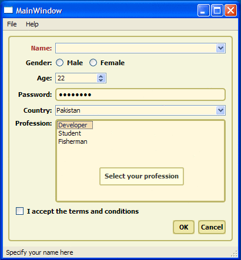
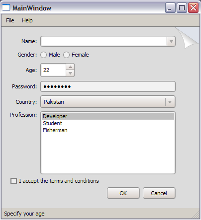
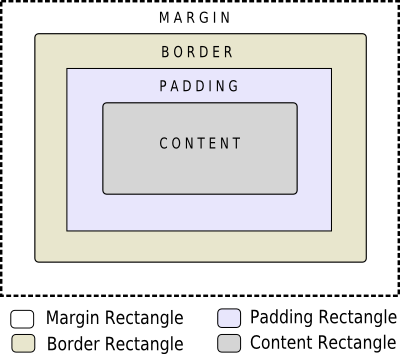
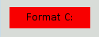
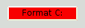
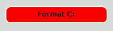

| Home · All Classes · Main Classes · Grouped Classes · Modules · Functions |
Qt Style Sheets are a powerful mechanism that allows you to customize the appearance of widgets, in addition to what is already possible by subclassing QStyle. The concepts, terminology, and syntax of Qt Style Sheets are heavily inspired by HTML Cascading Style Sheets (CSS) but adapted to the world of widgets.
Topics:
Styles sheets are textual specifications that can be set on the whole application using QApplication::setStyleSheet() or on a specific widget (and its children) using QWidget::setStyleSheet(). If several style sheets are set at different levels, Qt derives the effective style sheet from all of those that are set. This is called cascading.
For example, the following style sheet specifies that all QLineEdits should use yellow as their background color, and all QCheckBoxes should use red as the text color:
QLineEdit { background: yellow }
QCheckBox { color: red }
For this kind of customization, style sheets are much more powerful than QPalette. For example, it might be tempting to set the QPalette::Button role to red for a QPushButton to obtain a red push button. However, this wasn't guaranteed to work for all styles, because style authors are restricted by the different platforms' guidelines and (on Windows XP and Mac OS X) by the native theme engine.
Style sheets let you perform all kinds of customizations that are difficult or impossible to perform using QPalette alone. If you want yellow backgrounds for mandatory fields, red text for potentially destructive push buttons, or fancy check boxes, style sheets are the answer.
Style sheets are applied on top of the current widget style, meaning that your applications will still look native, but any style sheet constraints will be taken into consideration. Unlike palette fiddling, style sheets offer guarantees: If you set the background color of a QPushButton to be red, you can be assured that the button will have a red background in all styles, on all platforms. Qt Designer provides style sheet integration, making it easy to view the effects of a style sheet in different widget styles.
In addition, style sheets can be used to provide a distinctive look and feel for your application, without having to subclass QStyle. For example, you can specify arbitrary images for radio buttons and check boxes to make them stand out. Using this technique, you can also achieve minor customizations that would normally require subclassing several style classes, such as specifying a style hint. The Style Sheet example depicted below defines two distinctive style sheets that you can try out and modify at will.
 |  |
When a style sheet is active, the QStyle returned by QWidget::style() is a wrapper "style sheet" style, not the platform-specific style. The wrapper style ensures that any active style sheet is respected and otherwise forwards the drawing operations to the underlying, platform-specific style (e.g., QWindowsXPStyle on Windows XP).
Warning: Qt style sheets are currently not supported for QMacStyle (the default style on Mac OS X). We plan to address this in some future release.
Qt Style Sheet terminology and syntactic rules are almost identical to those of HTML CSS. If you already know CSS, you can probably skim quickly through this section.
Style sheets consist of a sequence of style rules. A style rule is made up of a selector and a declaration. The selector specifies which widgets are affected by the rule; the declaration specifies which properties should be set on the widget. For example:
QPushButton { color: red }
In the above style rule, QPushButton is the selector and { color: red } is the declaration. The rule specifies that QPushButton and its subclasses (e.g., MyPushButton) should use red as their foreground color.
Qt Style Sheet is generally case insensitive (i.e., color, Color, COLOR, and cOloR refer to the same property). The only exceptions are class names, object names, and Qt property names, which are case sensitive.
Several selectors can be specified for the same declaration, using commas (,) to separate the selectors. For example, the rule
QPushButton, QLineEdit, QComboBox { color: red }
is equivalent to this sequence of three rules:
QPushButton { color: red }
QLineEdit { color: red }
QComboBox { color: red }
The declaration part of a style rule is a list of property: value pairs, enclosed in braces ({}) and separated with semicolons. For example:
QPushButton { color: red; background-color: white }
See the List of Properties section below for the list of properties provided by Qt widgets.
All the examples so far used the simplest type of selector, the Type Selector. Qt Style Sheets support all the selectors defined in CSS2. The table below summarizes the most useful types of selectors.
| Selector | Example | Explanation |
|---|---|---|
| Universal Selector | * | Matches all widgets. |
| Type Selector | QPushButton | Matches instances of QPushButton and of its subclasses. |
| Property Selector | QPushButton[flat="false"] | Matches instances of QPushButton that are not flat. You may use this selector to test for any Qt property specified using Q_PROPERTY(). In addition, the special class property is supported, for the name of the class. Instead of =, you can also use ~= to test whether a Qt property of type QStringList contains a given QString. Warning: If the value of the Qt property changes after the style sheet has been set, it might be necessary to force a style sheet recomputation. One way to achieve this is to unset the style sheet and set it again. |
| Class Selector | .QPushButton | Matches instances of QPushButton, but not of its subclasses. This is equivalent to *[class~="QPushButton"]. |
| ID Selector | QPushButton#okButton | Matches all QPushButton instances whose object name is okButton. |
| Descendant Selector | QDialog QPushButton | Matches all instances of QPushButton that are descendants (children, grandchildren, etc.) of a QDialog. |
| Child Selector | QDialog > QPushButton | Matches all instances of QPushButton that are direct children of a QDialog. |
For styling complex widgets, it is necessary to access subcontrols of the widget, such as the drop-down button of a QComboBox or the up and down arrows of a QSpinBox. Selectors may contain subcontrols that make it possible to restrict the application of a rule to specific widget subcontrols. For example:
QComboBox::drop-down { image: url(dropdown.png) }
The above rule styles the drop-down button of all QComboBoxes. Although the double-colon (::) syntax is reminiscent of CSS3 Pseudo-Elements, Qt Sub-Controls differ conceptually from these and have different cascading semantics.
Sub-controls are always positioned with respect to another element (a reference element). This reference element could be the widget or another Sub-control. For example, the ::drop-down of a QComboBox is placed, by default, in the top right corner of the Padding rectangle of the QComboBox. The ::down-arrow is placed, by default, in the Center of the Contents rectangle of the ::drop-down Sub-control. See the List of Stylable Widgets below for the Sub-controls to use to style a widget and their default positions.
The origin rectangle to be used is changed using the subcontrol-origin property. For example, if we want to place the drop-down in the margin rectangle of the QComboBox instead of the default Padding rectangle, we can specify:
QComboBox {
margin-right: 20px;
}
QComboBox::drop-down {
subcontrol-origin: margin;
}
The alignment of the drop-down within the Margin rectangle is changed using subcontrol-position property.
The width and height properties can be used to control the size of the Sub-control. Note that setting a image implicitly sets the size of a Sub-control.
The relative positioning scheme (position : relative), allows the position of the Sub-Control to be offset from its initial position. For example, when the QComboBox's drop-down button is pressed, we may desire the arrow inside to be offset to give a "pressed" effect. To achieve this, we can specify:
QComboBox::down-arrow {
image: url(down_arrow.png);
}
QComboBox::down-arrow:pressed {
position: relative;
top: 1px; left: 1px;
}
The absolute positioning scheme (position : absolute), allows the position and size of the Sub-control to be changed with respect to the reference element.
Once positioned, they are treated the same as widgets and can be styled using the the box model.
See the List of Sub-Controls below for a list of supported subcontrols, and Customizing the QPushButton's Menu Indicator Sub-Control for a realistic example.
Selectors may contain pseudo-states that denote that restrict the application of the rule based on the widget's state. Pseudo-states appear at the end of the selector, with a colon (:) in between. For example, the following rule applies when the mouse hovers over a QPushButton:
QPushButton:hover { color: white }
Pseudo-states can be negated using the exclamation operator. For example, the following rule applies when the mouse does not hover over a QRadioButton:
QRadioButton:!hover { color: red }
Pseudo-states can be chained, in which case a logical AND is implied. For example, the following rule applies to when the mouse hovers over a checked QCheckBox:
QCheckBox:hover:checked { color: white }
Negated Pseudo-states may appear in Pseudo-state chains. For example, the following rule applies when the mouse hovers over a QPushButton that is not pressed:
QPushButton:hover:!pressed { color: blue; }
If needed, logical OR can be expressed using the comma operator:
QCheckBox:hover, QCheckBox:checked { color: white }
Pseudo-states can appear in combination with subcontrols. For example:
QComboBox::drop-down:hover { image: url(dropdown_bright.png) }
See the List of Pseudo-States section below for the list of pseudo-states provided by Qt widgets.
Conflicts arise when several style rules specify the same properties with different values. Consider the following style sheet:
QPushButton#okButton { color: gray }
QPushButton { color: red }
Both rules match QPushButton instances called okButton and there is a conflict for the color property. To resolve this conflict, we must take into account the specificity of the selectors. In the above example, QPushButton#okButton is considered more specific than QPushButton, because it (usually) refers to a single object, not to all instances of a class.
Similarly, selectors with pseudo-states are more specific that ones that do not specify pseudo-states. Thus, the following style sheet specifies that a QPushButton should have white text when the mouse is hovering over it, otherwise red text:
QPushButton:hover { color: white }
QPushButton { color: red }
Here's a tricky one:
QPushButton:hover { color: white }
QPushButton:enabled { color: red }
Here, both selectors have the same specificity, so if the mouse hovers over the button while it is enabled, the second rule takes precedence. If we want the text to be white in that case, we can reorder the rules like this:
QPushButton:enabled { color: red }
QPushButton:hover { color: white }
Alternatively, we can make the first rule more specific:
QPushButton:hover:enabled { color: white }
QPushButton:enabled { color: red }
A similar issue arises in conjunction with Type Selectors. Consider the following example:
QPushButton { color: red }
QAbstractButton { color: gray }
Both rules apply to QPushButton instances (since QPushButton inherits QAbstractButton) and there is a conflict for the color property. Because QPushButton inherits QAbstractButton, it might be tempting to assume that QPushButton is more specific than QAbstractButton. However, for style sheet computations, all Type Selectors have the same specificity, and the rule that appears last takes precedence. In other words, color is set to gray for all QAbstractButtons, including QPushButtons. If we really want QPushButtons to have red text, we can always reorder the rules.
For determining the specificity of a rule, Qt Style Sheets follow the CSS2 Specification:
A selector's specificity is calculated as follows:
- count the number of ID attributes in the selector (= a)
- count the number of other attributes and pseudo-classes in the selector (= b)
- count the number of element names in the selector (= c)
- ignore pseudo-elements [i.e., subcontrols].
Concatenating the three numbers a-b-c (in a number system with a large base) gives the specificity.
Some examples:
* {} /* a=0 b=0 c=0 -> specificity = 0 */ LI {} /* a=0 b=0 c=1 -> specificity = 1 */ UL LI {} /* a=0 b=0 c=2 -> specificity = 2 */ UL OL+LI {} /* a=0 b=0 c=3 -> specificity = 3 */ H1 + *[REL=up]{} /* a=0 b=1 c=1 -> specificity = 11 */ UL OL LI.red {} /* a=0 b=1 c=3 -> specificity = 13 */ LI.red.level {} /* a=0 b=2 c=1 -> specificity = 21 */ #x34y {} /* a=1 b=0 c=0 -> specificity = 100 */
Style sheets can be set on the QApplication, on parent widgets, and on child widgets. An arbitrary widget's effective style sheet is obtained by merging the style sheets set on the widget's ancestors (parent, grandparent, etc.), as well as any style sheet set on the QApplication.
When conflicts arise, the widget's own style sheet is always preferred to any inherited style sheet, irrespective of the specificity of the conflicting rules. Likewise, the parent widget's style sheet is preferred to the grandparent's, etc.
One consequence of this is that setting a style rule on a widget automatically gives it precedence over other rules specified in the ancestor widgets' style sheets or the QApplication style sheet. Consider the following example. First, we set a style sheet on the QApplication:
qApp->setStyleSheet("QPushButton { color: white }");
Then we set a style sheet on a QPushButton object:
myPushButton->setStyleSheet("* { color: blue }");
The style sheet on the QPushButton forces the QPushButton (and any child widget) to have blue text, in spite of the more specific rule set provided by the application-wide style sheet.
The result would have been the same if we had written
myPushButton->setStyleSheet("color: blue");
except that if the QPushButton had children (which is unlikely), the style sheet would have no impact on them.
Style sheet cascading is a complex topic. Refer to the CSS2 Specification for the gory details. Be aware that Qt currently doesn't implement !important.
In classic CSS, when font and color of an item is not explicitly set, it gets automatically inherited from the parent. When using Qt Style Sheets, a widget does not automatically inherit its font and color setting from its parent widget.
For example, consider a QPushButton inside a QGroupBox:
qApp->setStyleSheet("QGroupBox { color: red; } ");
The QPushButton does not have an explcit color set. Hence, instead of inheriting color of its parent QGroupBox, it has the sytem color. If we want to set the color on a QGroupBox and its children, we can write:
qApp->setStyleSheet("QGroupBox, QGroupBox * { color: red; }");
In contrast, setting a font and propagate using QWidget::setFont() and QWidget::setPalette() propagates to child widgets.
The Type Selector can be used to style widgets of a particular type. For example,
class MyPushButton : public QPushButton {
// ...
}
// ...
qApp->setStyleSheet("MyPushButton { background: yellow; }");
Qt Style Sheet uses QObject::className() of the widget to determine when to apply the Type Selector. When custom widgets are inside namespaces, the QObject::className() returns <namespace>::<classname>. This conflicts with the syntax for Sub-Controls. To overcome this problem, when using the Type Selector for widgets inside namespaces, we must replace the "::" with "--". For example,
namespace ns {
class MyPushButton : public QPushButton {
// ...
}
}
// ...
qApp->setSytleSheet("ns--MyPushButton { background: yellow; }");
Qt Designer is an excellent tool to preview style sheets. Just right-click anywhere on the form you're designing and click Change styleSheet....
[Missing image stylesheet-designer-options.png]
In Qt 4.3 and later, Qt Designer also includes a style sheet syntax highlighter and validator. The validator indicates if the syntax is valid or invalid, at the bottom left of the Edit Style Sheet dialog.
[Missing image designer-validator-highlighter.png]
Qt Style Sheets support various properties, pseudo-states, and subcontrols that make it possible to customize the look of widgets.
The following table lists the Qt widgets that can be customized using style sheets:
| Widget | How to Style |
|---|---|
| QAbstractScrollArea | Supports the box model. All derivatives of QAbstractScrollArea, including QTextEdit, and QAbstractItemView (all item view classes), support scrollable backgrounds using background-attachment. Setting the background-attachment to fixed provides a background-image that does not scroll with the viewport. Setting the background-attachment to scroll, scrolls the background-image when the scroll bars move. |
| QCheckBox | Supports the box model. The check indicator can be styled using the ::indicator subcontrol. By default, the indicator is placed in the Top Left corner of the Contents rectangle of the widget. The spacing property specifies the spacing between the check indicator and the text. |
| QColumnView | The grip can be styled be using the image property. The arrow indicators can by styled using the ::left-arrow subcontrol and the ::right-arrow subcontrol. |
| QComboBox | The frame around the combobox can be styled using the box model. The drop-down button can be styled using the ::drop-down subcontrol. By default, the drop-down button is placed in the top right corner of the padding rectangle of the widget. The arrow mark inside the drop-down button can be styled using the ::down-arrow subcontrol. By default, the arrow is placed in the center of the contents rectangle of the drop-down subcontrol. |
| QDateEdit | See QSpinBox. |
| QDateTimeEdit | See QSpinBox. |
| QDialog | Supports only the background, background-clip and background-origin properties. |
| QDialogButtonBox | The layout of buttons can be altered using the button-layout property. |
| QDoubleSpinBox | See QSpinBox. |
| QFrame | Supports the box model. Does not support the :hover pseudo-state. Warning: For QFrame and its subclasses, you must set the QFrame::frameStyle property to QFrame::StyledPanel; otherwise, the background and border attributes will not be respected. |
| QGroupBox | Supports the box model. The title can be styled using the ::title subcontrol. By default, the title is placed depending on QGroupBox::textAlignment. In the case of a checkable QGroupBox, the title includes the check indicator. The indicator is styled using the the ::indicator subcontrol. The spacing property can be used to control the spacing between the text and indicator. |
| QHeaderView | Supports the box model. The sections of the header view are styled using the ::section sub control. The section Sub-control supports the :middle, :first, :last, :only-one, :next-selected, :previous-selected, :selected pseudo states. Sort indicator in can be styled using the ::up-arrow and the ::down-arrow Sub-control. |
| QLabel | Supports the box model. Does not support the :hover pseudo-state. Warning: Since a QLabel is a QFrame, you must set the QFrame::frameStyle property to QFrame::StyledPanel; otherwise, the background and border attributes will not be respected. |
| QLineEdit | Support the box model. The color and background of the selected item is styled using selection-color and selection-background-color respectively. The password character can be styled using the lineedit-password-character property. |
| QListView | Supports the box model. When alternating row colors is enabled, the alternating colors can be styled using the alternate-background-color property. The color and background of the selected item is styled using selection-color and selection-background-color respectively. The selection behavior is controlled by the #show-decoration-selected-prop property. See QAbsractScrollArea to style scrollable backgrounds. |
| QListWidget | See QListWidget. |
| QMenu | Supports the box model. Individual items are styled using the ::item subcontrol. In addition to the usually supported pseudo states, item subcontrol supports the :selected, :default, :exclusive and the non-exclusive pseudo states. The indicator of checkable menu items is styled using the ::indicator subcontrol. The separator is styled using the ::separator subcontrol. For items with a sub menu, the arrow marks are styled using the right-arrow and left-arrow. The scroller is styled using the ::scroller. The tear-off is styled using the ::tear-off. |
| QMenuBar | Supports the box model. The spacing property specifies the spacing between menu items. Individual items are styled using the ::item subcontrol. |
| QMessageBox | The messagebox-text-interaction-flags property can be used to alter the interaction with text in the message box. |
| QProgressBar | Supports the box model. The chunks of the progress bar can be styled using the ::chunk subcontrol. The chunk is displayed on the Contents rectangle of the widget. If the progress bar displays text, use the ::label subcontrol to position the text. Indeterminate progress bars have the :indeterminate pseudo state set. |
| QPushButton | Supports the box model. Supports the :default, :flat, :checked pseudo states. For QPushButton with a menu, the menu indicator is styled using the ::menu-indicator subcontrol. Appearance of checkable push buttons can be customized using the :open and :closed pseudo-states. |
| QRadioButton | Supports the box model. The check indicator can be styled using the ::indicator subcontrol. By default, the indicator is placed in the Top Left corner of the Contents rectangle of the widget. The spacing property specifies the spacing between the check indicator and the text. |
| QScrollBar | Supports the box model. The Contents rectangle of the widget is considered to be the groove over which the slider moves. The extent of the QScrolBar (i.e the width or the height depending on the orientation) is set using the width or height property respectively. To determine the orientation, use the :horizontal and the :vertical pseudo states. The slider can be styled using the ::handle subcontrol. Setting the min-width or min-height provides size contraints for the slider depending on the orientation. The ::add-line subcontrol can be used to style the button to add a line. By default, the add-line subcontrol is placed in top right corner of the Border rectangle of the widget. Depending on the orientation the ::right-arrow or ::down-arrow. By default, the arrows are placed in the center of the Contents rectangle of the add-line subcontrol. The ::sub-line subcontrol can be used to style the button to subtract a line. By default, the sub-line subcontrol is placed in bottom right corner of the Border rectangle of the widget. Depending on the orientation the ::left-arrow or ::up-arrow. By default, the arrows are placed in the center of the Contents rectangle of the sub-line subcontrol. The ::sub-page subcontrol can be used to style the region of the slider that subtracts a page. The ::add-page subcontrol can be used to style the region of the slider that adds a page. |
| QSizeGrip | Supports the width, height, and image properties. |
| QSlider | Supports the box model. For horizontal slides, the min-width and height properties must be provided. For vertical sliders, the min-height and width properties must be provided. The groove of the slider is styled using the ::groove. The groove is positioned by default in the Contents rectangle of the widget. The thumb of the slider is styled using ::handle subcontrol. The subcontrol moves in the Contents rectangle of the groove subcontrol. |
| QSpinBox | The frame of the spin box can be styled using the box model. The up button and arrow can be styled using the ::up-button and ::up-arrow subcontrols. By default, the up-button is placed in the top right corner in the Padding rectangle of the widget. Without an explicit size, it occupies half the height of its reference rectangle. The up-arrow is placed in the center of the Contents rectangle of the up-button. The down button and arrow can be styled using the ::down-button and ::down-arrow subcontrols. By default, the down-button is placed in the bottom right corner in the Padding rectangle of the widget. Without an explicit size, it occupies half the height of its reference rectangle. The bottom-arrow is placed in the center of the Contents rectangle of the bottom-button. |
| QSplitter | Supports the box model. The handle of the splitter is styled using the ::handle subcontrol. |
| QStatusBar | Supports only the background property. The frame for individual items can be style using the ::item subcontrol. |
| QTabBar | Individual tabs may be styled using the ::tab subcontrol. The tabs support the :only-one, :first, :last, :middle, :previous--selected, :next-selected, :selected pseudo states. The :top, :left, :right, :bottom pseudo states depending on the orientation of the tabs. Overlapping tabs for the selected state are created by using negative margins or using the absolute position scheme. The tear indicator of the QTabBar is styled using the ::tear subcontrol. QTabBar used two QToolButtons for its scrollers that can be styled using the QTabBar QToolButton selector. To specify the width of the scroll button use the ::scroller subcontrol. To change the position of the QTabBar withing a QTabWidget, use the tab-bar subcontrol (and set subcontrol-position). |
| QTabWidget | The frame of the tab widget is styled using the ::pane subcontrol. The left and right corners are styled using the ::left-corner and ::right-corner respectively. The position of the the tab bar is controlled using the ::tab-bar subcontrol. By default, the subcontrols have positions of a QTabWidget in the QWindowsStyle. To place the QTabBar in the center, set the subcontrol-position of the tab-bar subcontrol. The :top, left-ps, right, :bottom pseudo states depending on the orientation of the tabs. |
| QTableView | Supports the box model. When alternating row colors is enabled, the alternating colors can be styled using the alternate-background-color property. The color and background of the selected item is styled using selection-color and selection-background-color respectively. The color of the grid can be specified using the gridline-color property. See QAbsractScrollArea to style scrollable backgrounds. |
| QTableWidget | See {#qtableview-widget}{QTableView}. |
| QTextEdit | Supports the box model. The color and background of selected text is styled using selection-color and selection-background-color respectively. See QAbsractScrollArea to style scrollable backgrounds. |
| QTimeEdit | See QSpinBox. |
| QToolBar | Supports the box model. The :top, :left, :right, :bottom pseudo states depending on the area in which the tool bar is grouped. The :first, :last, :middle, :only-one pseudo states indicator the position of the tool bar within a line group (See QStyleOptionToolBar::positionWithinLine). The separator of a QToolBar is styled using the ::separator subcontrol. The handle (to move the toolbar) is styled using the ::handle subcontrol. |
| QToolButton | Supports the box model. If the QToolButton has a menu, is ::menu-indicator subcontrol can be used to style the indicator. By default, the menu-indicator is positioned at the bottom right of the Padding rectangle of the widget. If the QToolButton is in QToolButton::MenuButtonPopup mode, the ::menu-button subcontrol is used to draw the menu button. ::menu-arrow subcontrol is used to draw the menu arrow inside the menu-button. By default, it is positioned in the center of the Contents rectangle of the the menu-button subcontrol. When the QToolButton displays arrows, the ::up-arrow, ::down-arrow, ::left-arrow and ::right-arrow subcontrols are used. |
| QToolBox | Supports the box model. The individual tabs can by styled using the ::tab subcontrol. The tabs support the :only-one, :first, :last, :middle, :previous-selected, :next-selected, :selected pseudo states. |
| QToolTip | Supports the box model. The opacity property controls the opacity of the tooltip. |
| QTreeView | Supports the box model. When alternating row colors is enabled, the alternating colors can be styled using the alternate-background-color property. The color and background of the selected item is styled using selection-color and selection-background-color respectively. The branches of the tree view can be styled using the ::branch subcontrol. The ::branch Sub-control supports the :open, :closed, :has-sibling and :has-children pseudo states. See QAbsractScrollArea to style scrollable backgrounds. |
| QTreeWidget | See QTreeView. |
| QWidget | Supports only the background, backgorund-clip and background-origin properties. |
The table below lists all the properties supported by Qt Style Sheets. Which values can be given to an property depend on the property's type. Unless otherwise specified, properties below apply to all widgets. Properties marked with an asterisk * are specific to Qt and have no equivalent in CSS2 or CSS3.
| Property | Type | Description |
|---|---|---|
| alternate-background-color | Brush | The alternate background color used in QAbstractItemView subclasses. If this property is not set, the default value is whatever is set for the palette's AlternateBase role. Example: QTreeView {
alternate-background-color: blue;
background: yellow;
}
See also background and selection-background-color. |
| background | Background | Shorthand notation for setting the background. Equivalent to specifying background-color, background-image, background-repeat, and/or background-position. This property is supported by QAbstractItemView subclasses, QAbstractSpinBox subclasses, QCheckBox, QComboBox, QDialog, QFrame, QGroupBox, QLabel, QLineEdit, QMenu, QMenuBar, QPushButton, QRadioButton, QSplitter, QTextEdit, QToolTip, and plain QWidgets. For QFrame and its subclasses, you must set the QFrame::frameStyle property to QFrame::StyledPanel; otherwise, the background property will not be respected. Example: QTextEdit { background: yellow }
See also background-origin, selection-background-color, background-clip, background-attachment and alternate-background-color. |
| background-color | Brush | The background color used for the widget. Examples: QLabel { background-color: yellow }
QLineEdit { background-color: rgb(255, 0, 0) }
|
| background-image | Url | The background image used for the widget. Semi-transparent parts of the image let the background-color shine through. Example: QFrame { background-image: url(:/images/hydro.png) }
|
| background-repeat | Repeat | Whether and how the background image is repeated to fill the background-origin rectangle. If this property is not specified, the background image is repeated in both directions (repeat). Example: QFrame {
background: white url(:/images/ring.png);
background-repeat: repeat-y;
background-position: left;
}
|
| background-position | Alignment | The alignment of the background image within the background-origin rectangle. If this property is not specified, the alignment is top left. Example: QFrame {
background: url(:/images/footer.png);
background-position: bottom left;
}
|
| background-attachment | Attachment | Determines whether the background-image in a QAbstractScrollArea is scrolled or fixed with respect to the viewport. By default, the background-image scrolls with the viewport. Example: QTextEdit {
background-image: url("leaves.png");
background-attachment: fixed;
}
See also background |
| background-clip | Origin | The widget's rectangle, in which the background is drawn. This property specifies the rectangle to which the background-color and background-image are clipped. This property is supported by QAbstractItemView subclasses, QAbstractSpinBox subclasses, QCheckBox, QComboBox, QDialog, QFrame, QGroupBox, QLabel, QPushButton, QRadioButton, QSplitter, QTextEdit, QToolTip, and plain QWidgets. If this property is not specified, the default is border. Example: QFrame {
background-image: url(:/images/header.png);
background-position: top left;
background-origin: content;
background-clip: padding;
}
See also background, background-origin and The Box Model. |
| background-origin | Origin | The widget's background rectangle, to use in conjunction with background-position and background-image. This property is supported by QAbstractItemView subclasses, QAbstractSpinBox subclasses, QCheckBox, QComboBox, QDialog, QFrame, QGroupBox, QLabel, QPushButton, QRadioButton, QSplitter, QTextEdit, QToolTip, and plain QWidgets. If this property is not specified, the default is padding. Example: QFrame {
background-image: url(:/images/header.png);
background-position: top left;
background-origin: content;
}
See also background and The Box Model. |
| border | Border | Shorthand notation for setting the widget's border. Equivalent to specifying border-color, border-style, and/or border-width. This property is supported by QAbstractItemView subclasses, QAbstractSpinBox subclasses, QCheckBox, QComboBox, QDialog, QFrame, QGroupBox, QLabel, QLineEdit, QMenu, QMenuBar, QPushButton, QRadioButton, QSplitter, QTextEdit, QToolTip, and plain QWidgets. Example: QLineEdit { border: 1px solid white }
|
| border-top | Border | Shorthand notation for setting the widget's top border. Equivalent to specifying border-top-color, border-top-style, and/or border-top-width. |
| border-right | Border | Shorthand notation for setting the widget's right border. Equivalent to specifying border-right-color, border-right-style, and/or border-right-width. |
| border-bottom | Border | Shorthand notation for setting the widget's bottom border. Equivalent to specifying border-bottom-color, border-bottom-style, and/or border-bottom-width. |
| border-left | Border | Shorthand notation for setting the widget's left border. Equivalent to specifying border-left-color, border-left-style, and/or border-left-width. |
| border-color | Box Colors | The color of all the border's edges. Equivalent to specifying border-top-color, border-right-color, border-bottom-color, and border-left-color. This property is supported by QAbstractItemView subclasses, QAbstractSpinBox subclasses, QCheckBox, QComboBox, QDialog, QFrame, QGroupBox, QLabel, QLineEdit, QMenu, QMenuBar, QPushButton, QRadioButton, QSplitter, QTextEdit, QToolTip, and plain QWidgets. If this property is not specified, it defaults to color (i.e., the widget's foreground color). Example: QLineEdit {
border-width: 1px;
border-style: solid;
border-color: white;
}
See also border-style, border-width, border-image, and The Box Model. |
| border-top-color | Brush | The color of the border's top edge. |
| border-right-color | Brush | The color of the border's right edge. |
| border-bottom-color | Brush | The color of the border's bottom edge. |
| border-left-color | Brush | The color of the border's left edge. |
| border-image | Border Image | The image used to fill the border. The image is cut into nine parts and stretched appropriately if necessary. See Border Image for details. This property is supported by QAbstractItemView subclasses, QAbstractSpinBox subclasses, QCheckBox, QComboBox, QDialog, QFrame, QGroupBox, QLabel, QLineEdit, QMenu, QMenuBar, QPushButton, QRadioButton, QSplitter, QTextEdit, QToolTip, and plain QWidgets. See also border-color, border-style, border-width, and The Box Model. |
| border-radius | Radius | The radius of the border's corners. Equivalent to specifying border-top-left-radius, border-top-right-radius, border-bottom-right-radius, and border-bottom-left-radius. The border-radius clips the element's background. This property is supported by QAbstractItemView subclasses, QAbstractSpinBox subclasses, QCheckBox, QComboBox, QFrame, QGroupBox, QLabel, QLineEdit, QMenu, QMenuBar, QPushButton, QRadioButton, QSplitter, QTextEdit, and QToolTip. If this property is not specified, it defaults to 0. Example: QLineEdit {
border-width: 1px;
border-style: solid;
border-radius: 4px;
}
See also border-width and The Box Model. |
| border-top-left-radius | Radius | The radius of the border's top-left corner. |
| border-top-right-radius | Radius | The radius of the border's top-right corner. |
| border-bottom-right-radius | Radius | The radius of the border's bottom-right corner. Setting this property to a positive value results in a rounded corner. |
| border-bottom-left-radius | Radius | The radius of the border's bottom-left corner. Setting this property to a positive value results in a rounded corner. |
| border-style | Border Style | The style of all the border's edges. This property is supported by QAbstractItemView subclasses, QAbstractSpinBox subclasses, QCheckBox, QComboBox, QFrame, QGroupBox, QLabel, QLineEdit, QMenu, QMenuBar, QPushButton, QRadioButton, QSplitter, QTextEdit, and QToolTip. If this property is not specified, it defaults to none. Example: QLineEdit {
border-width: 1px;
border-style: solid;
border-color: blue;
}
See also border-color, border-style, border-image, and The Box Model. |
| border-top-style | Border Style | The style of the border's top edge. |
| border-right-style | Border Style | The style of the border's right edge/ |
| border-bottom-style | Border Style | The style of the border's bottom edge. |
| border-left-style | Border Style | The style of the border's left edge. |
| border-width | Box Lengths | The width of the border. Equivalent to setting border-top-width, border-right-width, border-bottom-width, and border-left-width. This property is supported by QAbstractItemView subclasses, QAbstractSpinBox subclasses, QCheckBox, QComboBox, QFrame, QGroupBox, QLabel, QLineEdit, QMenu, QMenuBar, QPushButton, QRadioButton, QSplitter, QTextEdit, and QToolTip. Example: QLineEdit {
border-width: 2px;
border-style: solid;
border-color: darkblue;
}
See also border-color, border-radius, border-style, border-image, and The Box Model. |
| border-top-width | Length | The width of the border's top edge. |
| border-right-width | Length | The width of the border's right edge. |
| border-bottom-width | Length | The width of the border's bottom edge. |
| border-left-width | Length | The width of the border's left edge. |
| bottom | Length | If position is relative (the default), moves a subcontrol by a certain offset up; specifying bottom: y is then equivalent to specifying top: -y. If position is absolute, the bottom property specifies the subcontrol's bottom edge in relation to the parent's bottom edge (see also subcontrol-origin). Example: QSpinBox::down-button { bottom: 2px }
|
| button-layout | Number | The layout of buttons in a QDialogButtonBox or a QMessageBox. The possible values are 0 (WinLayout), 1 (MacLayout), 2 (KdeLayout), and 3 (GnomeLayout). If this property is not specified, it defaults to the value specified by the current style for the SH_DialogButtonLayout style hint. Example: * { button-layout: 2px }
|
| color | Brush | The color used to render text. This property is supported by all widgets that respect the QWidget::palette. If this property is not set, the default is whatever is set for in the widget's palette for the QWidget::foregroundRole (typically black). Example: QPushButton { color: red }
See also background and selection-color. |
| etch-disabled-text* | Boolean | Whether disabled text is drawn etched. If this property is not specified, it defaults to the value specified by the current style for the SH_EtchDisabledText style hint. Example: * { etch-disabled-text: 1px }
|
| font | Font | Shorthand notation for setting the text's font. Equivalent to specifying font-family, font-size, font-style, and/or font-weight. This property is supported by all widgets that respect the QWidget::font. If this property is not set, the default is the QWidget::font. Example: QCheckBox { font: bold italic large "Times New Roman" }
|
| font-family | String | The font family. Example: QCheckBox { font-family: "New Century Schoolbook" }
|
| font-size | Font Size | The font size. Example: QTextEdit { font-size: 12px }
|
| font-style | Font Style | The font style. Example: QTextEdit { font-style: italic }
|
| font-weight | Font Weight | The weight of the font. |
| gridline-color* | Color | The color of the grid line in a QTableView. If this property is not specified, it defaults to the value specified by the current style for the SH_Table_GridLineColor style hint. Example: * { gridline-color: gray }
|
| height | Length | The height of a subcontrol. If this property is not specified, it defaults to a value that depends on the subcontrol and on the current style. Warning: Unless otherwise specified, this property applies only to subcontrols and not to widgets. Example: QSpinBox::down-button { height: 10px }
See also width. |
| image* | Url+ | The image that is drawn in the contents rectangle of a subcontrol. The image property accepts a list of Urls or an svg. The actual image that is drawn is determined using the same algorithm as QIcon. If a svg is specified, the image is scaled to the size of the contents rectangle. Setting the image property on sub controls implicitly sets the width and height of the sub-control (unless the image in a SVG). In Qt 4.3 and later, the alignment of the image within the rectangle can be specified using image-position. Warning: The QIcon SVG plugin is needed to render SVG images. Example: /* implicitly sets the size of down-button to the size of spindown.png */
QSpinBox::down-button { image: url(:/images/spindown.png) }
QTextEdit { image: url(x1.png) url(x2.png) }
QTextEdit { image: url(pic1.svg) }
|
| image-position | alignment | In Qt 4.3 and later, the alignment of the image image's position can be specified using relative or absolute position. |
| left | Length | If position is relative (the default), moves a subcontrol by a certain offset to the right. If position is absolute, the left property specifies the subcontrol's left edge in relation to the parent's left edge (see also subcontrol-origin). If this property is not specified, it defaults to 0. Example: QSpinBox::down-button { left: 2px }
|
| lineedit-password- character* | Number | The QLineEdit password character as a Unicode number. If this property is not specified, it defaults to the value specified by the current style for the SH_LineEdit_PasswordCharacter style hint. Example: * { lineedit-password-character: 9679 }
|
| margin | Box Lengths | The widget's margins. Equivalent to specifying margin-top, margin-right, margin-bottom, and margin-left. This property is supported by QAbstractItemView subclasses, QAbstractSpinBox subclasses, QCheckBox, QComboBox, QFrame, QGroupBox, QLabel, QLineEdit, QMenu, QMenuBar, QPushButton, QRadioButton, QSplitter, QTextEdit, and QToolTip. If this property is not specified, it defaults to 0. Example: QLineEdit { margin: 2px }
See also padding, spacing, and The Box Model. |
| margin-top | Length | The widget's top margin. |
| margin-right | Length | The widget's right margin. |
| margin-bottom | Length | The widget's bottom margin. |
| margin-left | Length | The widget's left margin. |
| messagebox-text- interaction-flags* | Number | The interaction behavior for text in a message box. Possible values are based on Qt::TextInteractionFlags. If this property is not specified, it defaults to the value specified by the current style for the SH_MessageBox_TextInteractionFlags style hint. Example: QMessageBox { messagebox-text-interaction-flags: 5 }
|
| min-height | Length | The widget's or a subcontrol's minimum height. This property is supported by QAbstractItemView subclasses, QAbstractSpinBox subclasses, QCheckBox, QComboBox, QFrame, QGroupBox, QLabel, QLineEdit, QMenu, QMenuBar, QPushButton, QRadioButton, QSizeGrip, QSpinBox, QSplitter, QStatusBar, QTextEdit, and QToolTip. If this property is not specified, the minimum height is derived based on the widget's contents and the style. Warning: When used with widgets, this property affects only the QWidget::minimumSizeHint() of the element. As a result, this does not work for widgets that are not in a layout or do not use the QStyle::sizeFromContents() for size hint computation. Example: QComboBox { min-height: 24px }
See also min-width. |
| min-width | Length | The widget's minimum width. This property is supported by QAbstractItemView subclasses, QAbstractSpinBox subclasses, QCheckBox, QComboBox, QFrame, QGroupBox, QLabel, QLineEdit, QMenu, QMenuBar, QPushButton, QRadioButton, QSizeGrip, QSpinBox, QSplitter, QStatusBar, QTextEdit, and QToolTip. If this property is not specified, the minimum width is derived based on the widget's contents and the style. Warning: When used with widgets, this property affects only the QWidget::minimumSizeHint() of the element. As a result, this does not work for widgets that are not in a layout or do not use the QStyle::sizeFromContents() for size hint computation. Example: QComboBox { min-width: 72px }
See also min-height. |
| opacity* | Number | The opacity for a widget. Possible values are from 0 (transparent) to 255 (opaque). For the moment, this is only supported for tooltips. If this property is not specified, it defaults to the value specified by the current style for the SH_ToolTipLabel_Opacity style hint. Example: QToolTip { opacity: 223 }
|
| padding | Box Lengths | The widget's padding. Equivalent to specifying padding-top, padding-right, padding-bottom, and padding-left. This property is supported by QAbstractItemView subclasses, QAbstractSpinBox subclasses, QCheckBox, QComboBox, QFrame, QGroupBox, QLabel, QLineEdit, QMenu, QMenuBar, QPushButton, QRadioButton, QSplitter, QTextEdit, and QToolTip. If this property is not specified, it defaults to 0. Example: QLineEdit { padding: 3px }
See also margin, spacing, and The Box Model. |
| padding-top | Length | The widget's top padding. |
| padding-right | Length | The widget's right padding. |
| padding-bottom | Length | The widget's bottom padding. |
| padding-left | Length | The widget's left padding. |
| position | relative | absolute | Whether offsets specified using left, right, top, and bottom are relative or absolute coordinates. If this property is not specified, it defaults to relative. |
| right | Length | If position is relative (the default), moves a subcontrol by a certain offset to the left; specifying right: x is then equivalent to specifying left: -x. If position is absolute, the right property specifies the subcontrol's right edge in relation to the parent's right edge (see also subcontrol-origin). Example: QSpinBox::down-button { right: 2px }
|
| selection-background-color* | Brush | The background of selected text or items. This property is supported by all widgets that respect the QWidget::palette and that show selection text. If this property is not set, the default value is whatever is set for the palette's Highlight role. Example: QTextEdit { selection-background-color: darkblue }
See also selection-color and background. |
| selection-color* | Brush | The foreground of selected text or items. This property is supported by all widgets that respect the QWidget::palette and that show selection text. If this property is not set, the default value is whatever is set for the palette's HighlightedText role. Example: QTextEdit { selection-color: white }
See also selection-background-color and color. |
| show-decoration- selected* | Boolean | Controls whether selections in a QListView cover the entire row or just the extent of the text. If this property is not specified, it defaults to the value specified by the current style for the SH_ItemView_ShowDecorationSelected style hint. Example: * { show-decoration-selected: 1 }
|
| spacing* | Length | Internal spacing in the widget. This property is supported by QCheckBox, checkable QGroupBoxes, QMenuBar, and QRadioButton. If this property is not specified, the default value depends on the widget and on the current style. Example: QMenuBar { spacing: 10 }
|
| subcontrol-origin* | Origin | The origin rectangle of the subcontrol within the parent element. If this property is not specified, the default is padding. Example: QSpinBox::up-button {
image: url(:/images/spinup.png);
subcontrol-origin: content;
subcontrol-position: right top;
}
See also subcontrol-position. |
| subcontrol-position* | Alignment | The alignment of the subcontrol within the origin rectangle specified by subcontrol-origin. If this property is not specified, it defaults to a value that depends on the subcontrol. Example: QSpinBox::down-button {
image: url(:/images/spindown.png);
subcontrol-origin: padding;
subcontrol-position: right bottom;
}
See also subcontrol-origin. |
| top | Length | If position is relative (the default), moves a subcontrol by a certain offset down. If position is absolute, the top property specifies the subcontrol's top edge in relation to the parent's top edge (see also subcontrol-origin). If this property is not specified, it defaults to 0. Example: QSpinBox::up-button { top: 2px }
|
| width | Length | The width of a subcontrol. If this property is not specified, it defaults to a value that depends on the subcontrol and on the current style. Warning: Unless otherwise specified, this property applies only to subcontrols and not to widgets. Example: QSpinBox::up-button { width: 12px }
See also height. |
The following table summarizes the syntax and meaning of the different property types.
| Type | Syntax | Description |
|---|---|---|
| Alignment | { top | bottom | left | right | center }* | Horizontal and/or vertical alignment. Example: QTextEdit { background-position: bottom center }
|
| Attachment | { scroll | fixed }* | Scroll or fixed attachment. |
| Background | { Brush | Url | Repeat | Alignment }* | A sequence of Brush, Url, Repeat, and Alignment. |
| Boolean | 0 | 1 | True (1) or false (0). Example: QDialog { etch-disabled-text: 1 }
|
| Border | { Border Style | Length | Brush }* | Shorthand border property. |
| Border Image | none | Url Number{4} (stretch | repeat){0,2} | A border image is an image that is composed of nine parts (top left, top center, top right, center left, center, center right, bottom left, bottom center, and bottom right). When a border of a certain size is required, the corner parts are used as is, and the top, right, bottom, and left parts are stretched or repeated to produce a border with the desired size. See the CSS3 Draft Specification for details. |
| Border Style | dashed | dot-dash | dot-dot-dash | dotted | double | groove | inset | outset | ridge | solid | none | Specifies the pattern used to draw a border. See the CSS3 Draft Specification for details. |
| Box Colors | Brush{1,4} | One to four occurrences of Brush, specifying the top, right, bottom, and left edges of a box, respectively. If the left color is not specified, it is taken to be the same as the right color. If the bottom color is not specified, it is taken to be the same as the top color. If the right color is not specified, it is taken to be the same as the top color. Example: QLabel { border-color: red } /* red red red red */
QLabel { border-color: red blue } /* red blue red blue */
QLabel { border-color: red blue green } /* red blue green blue
*/
QLabel { border-color: red blue green yellow } /* red
blue green yellow */
|
| Box Lengths | Length{1,4} | One to four occurrences of Length, specifying the top, right, bottom, and left edges of a box, respectively. If the left length is not specified, it is taken to be the same as the right length. If the bottom length is not specified, is it taken to be the same as the top length. If the right length is not specified, it is taken to be the same as the top length. Examples: QLabel { border-width: 1px } /* 1px 1px 1px 1px */
QLabel { border-width: 1px 2px } /* 1px 2px 1px 2px */
QLabel { border-width: 1px 2px 3px } /* 1px 2px 3px 2px */
QLabel { border-width: 1px 2px 3px 4px } /* 1px 2px 3px 4px */
|
| Brush | Color | Gradient | PaletteRole | Specifies a Color or a Gradient or an entry in the Palette. |
| Color | rgb(r, g, b) | rgba(r, g, b, a) | #rrggbb | Color Name | Specifies a color as RGB (red, green, blue) or RGBA (red, green, blue, alpha). The rgb() or rgba() syntax can be used with integer values between 0 and 255, or with percentages. Examples: QLabel { border-color: red } /* opaque red */
QLabel { border-color: #FF0000 } /* opaque red */
QLabel { border-color: rgba(255, 0, 0, 75%) } /* 75% opaque red */
QLabel { border-color: rgb(255, 0, 0) } /* opaque red */
QLabel { border-color: rgb(100%, 0%, 0%) } /* opaque red */
|
| Font | (Font Style | Font Weight){0,2} Font Size String | Shorthand font property. |
| Font Size | Length | The size of a font. |
| Font Style | normal | italic | oblique | The style of a font. |
| Font Weight | normal | bold | 100 | 200 ... | 900 | The weight of a font. |
| Gradient | qlineargradient | qradialgradient | qconicalgradient | Specifies gradient fills. There are three types of gradient fills:
Gradients are specified in Object Bounding Mode. Imagine the box in which the gradient is rendered, to have its top left corner at (0, 0) and its bottom right corner at (1, 1). Gradient parameters are then specified as percentages from 0 to 1. These values are extrapolated to actual box coordinates at runtime. It is possible specify values that lie outside the bounding box (-0.6 or 1.8, for instance). Warning: The colors specified in for stops must either be color names or have the #rrggbb format i.e one cannot use the rgb or rgba notation. Examples: /* linear gradient from white to green */ QTextEdit { background: qlineargradient(x1:0, y1:0, x2:1, y2:1, stop:0 white, stop:1 green) } /* conical gradient from white to green */ QTextEdit { background: qconicalgradient(cx:0.5, cy:0.5, angle:30, stop:0 white, stop:1 #00FF00) } /* radial gradient from white to green */ QTextEdit { background: qradialgradient(cx:0, cy:0, radius: 1, fx:0.5, fy:0.5, stop:0 white, stop:1 green) } |
| Length | Number (px | em | ex)? | A number followed by a measurement unit. The supported units are:
|
| Number | A decimal integer or a real number | Examples: 0, 18, +127, -255, 12.34, -.5, 0009. |
| Origin | margin | border | padding | content | Indicates which of four rectangles to use.
See also The Box Model. |
| PaletteRole | alternate-base | base | bright-text | button | button-text | dark | highlight | highlighted-text | light | link | link-visited | mid | mid-light | shadow | text | window | window-text | These values correspond the Color roles in the widget's QPalette. For example, QPushButton { color: palette(dark); }
|
| Radius | Length{1, 2} | One or two occurrences of Length. If only one length is specified, it is used as the radius of the quarter circle defining the corner. If two lengths are specified, the first length is the horizontal radius of a quarter ellipse, whereas the second length is the vertical radius. |
| Repeat | repeat-x | repeat-y | repeat | no-repeat | A value indicating the nature of repetition.
|
| Url | url(filename) | filename is the name of a file on the local disk or stored using the Qt Resource System. Setting an image implicitly sets the width and height of the element. |
The following pseudo-states are supported:
| Pseudo-State | Description |
|---|---|
| :bottom | The item is positioned at the bottom. For example, a QTabBar that has its tabs positioned at the bottom. |
| :checked | The item is checked. For example, the checked state of QAbstractButton. |
| :closed | The item is in the closed state. For example, an non-expanded item in a QTreeView |
| :default | The item is the default. For example, a default QPushButton or a default action in a QMenu. |
| :disabled | The item is disabled. |
| :enabled | The item is enabled. |
| :exclusive | The item is part of an exclusive item group. For example, a menu item in a exclusive QActionGroup. |
| :first | The item is the first (in a list). For example, the first tab in a QTabBar. |
| :flat | The item desires to be rendered flat. For example, a flat QPushButton. |
| :focus | The item has input focus. |
| :has-children | The item has children. For example, an item in a QTreeView that has child items. |
| :has-siblings | The item has siblings. For example, an item in a QTreeView that siblings. |
| :horizontal | The item has horizontal orientation |
| :hover | The mouse is hovering over the item. |
| :indeterminate | The item has indeterminate state. For example, a QCheckBox or QRadioButton is partially checked. |
| :last | The item is the last (in a list). For example, the last tab in a QTabBar. |
| :left | The item is positioned at the left. For example, a QTabBar that has its tabs positioned at the left. |
| :middle | The item is in the middle (in a list). For example, a tab that is not in the beginning or the end in a QTabBar. |
| :no-frame | The item has no frame. For example, a frameless QSpinBox or QLineEdit. |
| :non-exclusive | The item is part of a non-exclusive item group. For example, a menu item in a non-exclusive QActionGroup. |
| :off | For items that can be toggled, this applies to items in the "off" state. |
| :on | For items that can be toggled, this applies to widgets in the "on" state. |
| :only-one | The item is the only one (in a list). For example, a lone tab in a QTabBar. |
| :open | The item is in the open state. For example, an expanded item in a QTreeView, or a QComboBox or QPushButton with an open menu. |
| :next-selected | The next item (in a list) is selected. For example, the selected tab of a QTabBar is next to this item. |
| :pressed | The item is being pressed using the mouse. |
| :previous-selected | The previous item (in a list) is selected. For example, a tab in a QTabBar that is next to the selected tab. |
| :read-only | The item is marked read only or non-editable. For example, a read only QLineEdit or a non-editable QComboBox. |
| :right | The item is positioned at the right. For example, a QTabBar that has its tabs positioned at the right. |
| :selected | The item is selected. For example, the selected tab in a QTabBar or the selected item in a QMenu. |
| :top | The item is positioned at the top. For example, a QTabBar that has its tabs positioned at the top. |
| :unchecked | The item is unchecked. |
| :vertical | The item has vertical orientation |
The following subcontrols are available:
| Sub-Control | Description |
|---|---|
| ::add-line | The button to add a line of a QScrollBar |
| ::add-page | The region between the handle (slider) and the add-line of a QScrollBar |
| ::branch | The branch indicator of a QTreeView. |
| ::chunk | The progress chunk of a QProgressBar |
| ::down-arrow | The down arrow of a QComboBox, QHeaderView (sort indicator), QScrollBar or QSpinBox. |
| ::down-button | The down button of a QScrollBar or a QSpinBox. |
| ::drop-down | The drop-down button of a QComboBox. |
| ::groove | The groove of a QSlider |
| ::indicator | The indicator of a QCheckBox, a QRadioButton, a checkable QMenu item or a checkable QGroupBox. |
| ::handle | The handle (slider) of a QScrollBar or a QSlider |
| ::item | An item of a QMenuBar, a QMenu, or a QStatusBar. |
| ::label | The label of a QProgressBar |
| ::left-arrow | The left arrow of a QScrollBar |
| ::left-corner | The left corner of a QTabWidget. For example, this control can be used to control position the left corner widget in a QTabWidget. |
| ::menu-arrow | The arrow of a QToolButton with a menu |
| ::menu-button | The menu button of a QToolButton |
| ::menu-indicator | The menu indicator of a QPushButton. |
| ::right-arrow | The right arrow of a QMenu or a QScrollBar |
| ::pane | The pane (frame) of a QTabWidget |
| ::right-corner | The right corner of a QTabWidget. For example, this control can be used to control the position the right corner widget in a QTabWidget. |
| ::scroller | The scroller of a QMenu or QTabBar |
| ::section | The section of a QHeaderView |
| ::separator | The separator of a QMenu |
| ::sub-line | The button to subtract a line of a QScrollBar |
| ::sub-page | The region between the handle (slider) and the sub-line of a QScrollBar |
| ::tab | The tab of a QTabBar or QToolBox |
| ::tab-bar | The tab bar of a QTabWidget. This subcontrol exists only to control the position of the QTabBar inside the QTabWidget. To style the tabs using the ::tab subcontrol. |
| ::tear | The tear indicator of a QTabBar |
| ::tear-off | The tear-off indicator of a QMenu |
| ::title | The title of a QGroupBox. |
| ::up-arrow | The up arrow of a QHeaderView (sort indicator), QScrollBar or a QSpinBox. |
| ::up-button | The up button of a QSpinBox. |
See Customizing the QPushButton's Menu Indicator Sub-Control for an example of how to customize a subcontrol.
Widgets and subcontrols that support the background, border, margin, and padding properties follow the box model. The image below illustrates how these properties relate to each other:

The margin, border-width, and padding properties all default to zero. In that case, all four rectangles (margin, border, padding, and content) coincide exactly.
If a background is specified for a widget, by default it is drawn only for the area inside the border. This can be changed using the background-clip property.
In this section, we will see examples of how to style widgets using style sheets.
Let's start by setting yellow as the background color of all QLineEdits in an application. This could be achieved like this:
qApp->setStyleSheet("QLineEdit { background-color: yellow }");
If we want the property to apply only to the QLineEdits that are children (or grandchildren or grand-grandchildren) of a specific dialog, we would rather do this:
myDialog->setStyleSheet("QLineEdit { background-color: yellow }");
If we want the property to apply only to one specific QLineEdit, we can give it a name using QObject::setObjectName() and use an ID Selector to refer to it:
myDialog->setStyleSheet("QLineEdit#nameEdit { background-color: yellow }");
Alternatively, we can set the background-color property directly on the QLineEdit, omitting the selector:
nameEdit->setStyleSheet("background-color: yellow");
To ensure a good contrast, we should also specify a suitable color for the text:
nameEdit->setStyleSheet("color: blue; background-color: yellow");
It might be a good idea to change the colors used for selected text as well:
nameEdit->setStyleSheet("color: blue;"
"background-color: yellow;"
"selection-color: yellow;"
"selection-background-color: blue;");
There are many situations where we need to present a form that has mandatory fields. To indicate to the user that the field is mandatory, one effective (albeit esthetically dubious) solution is to use yellow as the background color for those fields. It turns out this is very easy to implement using Qt Style Sheets. First, we would use the following application-wide style sheet:
*[mandatoryField="true"] { background-color: yellow }
This means that every widget whose mandatoryField Qt property is set to true would have a yellow background.
Then, for each mandatory field widget, we would simply create a mandatoryField property on the fly and set it to true. For example:
QLineEdit *nameEdit = new QLineEdit(this);
nameEdit->setProperty("mandatoryField", true);
QLineEdit *emailEdit = new QLineEdit(this);
emailEdit->setProperty("mandatoryField", true);
QSpinBox *ageSpinBox = new QSpinBox(this);
ageSpinBox->setProperty("mandatoryField", true);
This time, we will show how to create a red QPushButton. This QPushButton would presumably be connected to a very destructive piece of code.
First, we are tempted to use this style sheet:
QPushButton#evilButton { background-color: red }
However, the result is a boring, flat button with no borders:

What happened is this:
Let's improve the situation by specifying a border:
QPushButton#evilButton {
background-color: red;
border-style: outset;
border-width: 2px;
border-color: beige;
}

Things look already a lot better. But the button looks a bit cramped. Let's specify some spacing between the border and the text using the padding. Additionally, we will enforce a minimum width, round the corners, and specify a larger font to make the button look nicer:
QPushButton#evilButton {
background-color: red;
border-style: outset;
border-width: 2px;
border-radius: 10px;
border-color: beige;
font: bold 14px;
min-width: 10em;
padding: 6px;
}

The only issue remaining is that the button doesn't react when we press it. We can fix this by specifying a slightly different background color and use a different border style.
QPushButton#evilButton {
background-color: red;
border-style: outset;
border-width: 2px;
border-radius: 10px;
border-color: beige;
font: bold 14px;
min-width: 10em;
padding: 6px;
}
QPushButton#evilButton:pressed {
background-color: rgb(224, 0, 0);
border-style: inset;
}
Subcontrols give access to the sub-elements of a widget. For example, a QPushButton associated with a menu (using QPushButton::setMenu()) has a menu indicator. Let's customize the menu indicator for the red push button:
QPushButton#evilButton::menu-indicator {
image: url(myindicator.png);
}
By default, the menu indicator is located at the bottom-right corner of the padding rectangle. We can change this by specifying subcontrol-position and subcontrol-origin to anchor the indicator differently. We can also use top and left to move the indicator by a few pixels. For example:
QPushButton::menu-indicator {
image: url(myindicator.png);
subcontrol-position: right center;
subcontrol-origin: padding;
left: -2px;
}
This positions the myindicator.png to the center right of the QPushButton's padding rectangle (see subcontrol-origin for more information).
Since red seems to be our favorite color, let's make the text in QLineEdit red by setting the following application-wide stylesheet:
QLineEdit { color: red }
However, we would like to give a visual indication that a QLineEdit is read-only by making it appear gray:
QLineEdit { color: red }
QLineEdit[readOnly="true"] { color: gray }
At some point, our design team comes with the requirement that all QLineEdits in the registration form (with the object name registrationDialog) to be brown:
QLineEdit { color: red }
QLineEdit[readOnly="true"] { color: gray }
#registrationDialog QLineEdit { color: brown }
A few UI design meetings later, we decide that all our QDialogs should have brown colored QLineEdits:
QLineEdit { color: red }
QLineEdit[readOnly="true"] { color: gray }
QDialog QLineEdit { color: brown }
Quiz: What happens if we have a read-only QLineEdit in a QDialog? [Hint: The Conflict Resolution section above explains what happens in cases like this.]
See also Style Sheet Example, Supported HTML Subset, and QStyle.
| Copyright © 2007 Trolltech | Trademarks | Qt 4.3.0 |